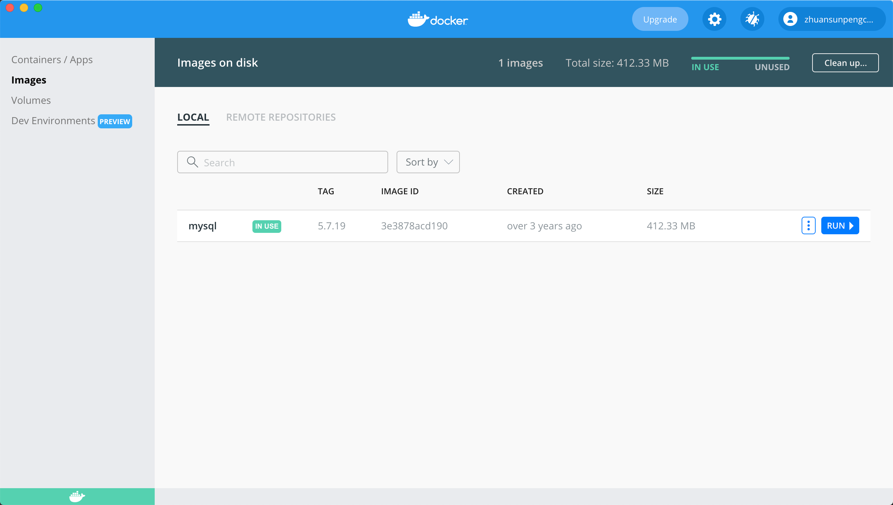
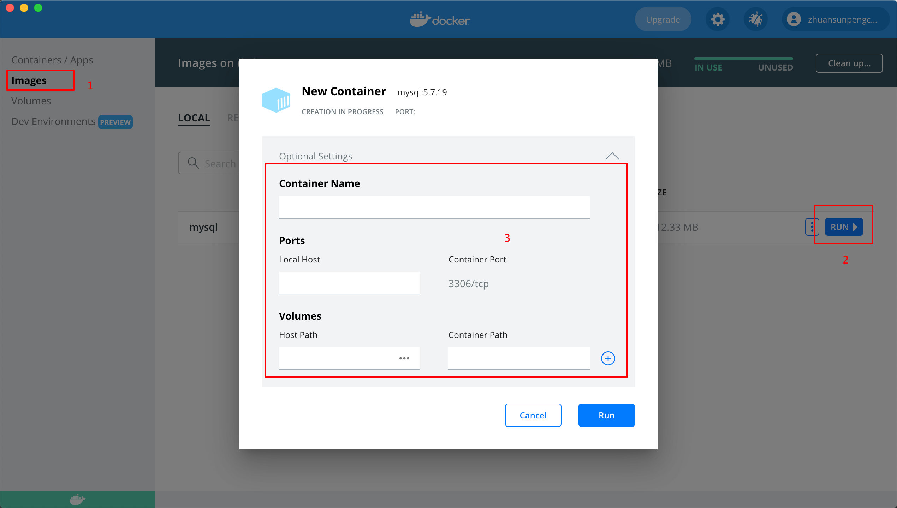
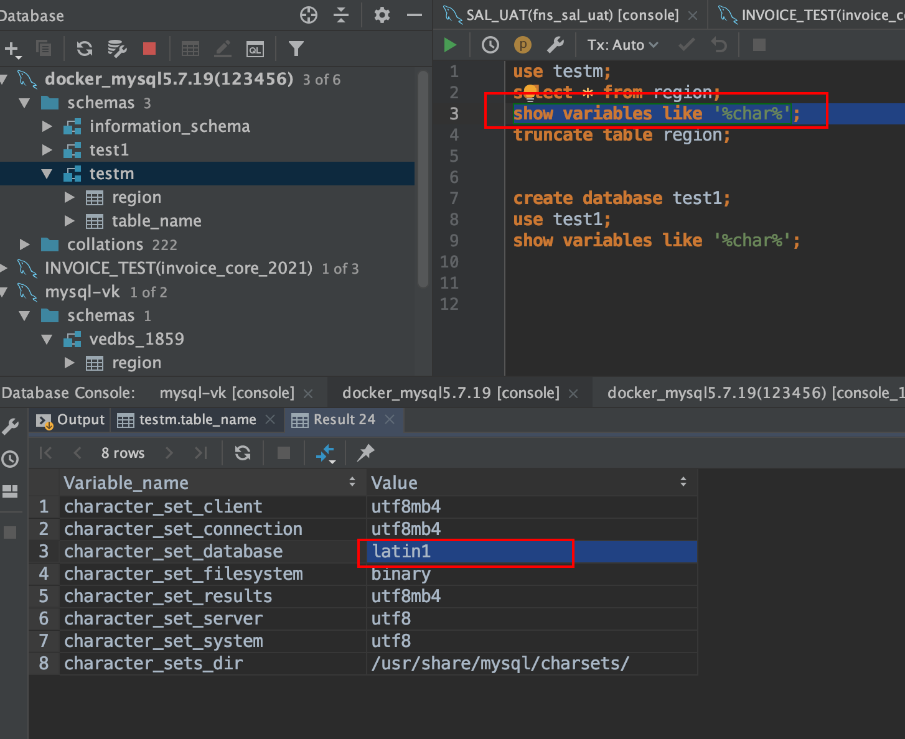

通过docker安装mysql5.7.19并解决中文乱码问题的方法
安装Docker
首先安装docker；
安装mysql5.7.19
从dokcer仓库下载5.7.19版本的数据，如果不指定版本的话，下载的就是最新的版本，为什么选择5.7.19，因为公司使用的数据库是这个版本，所以就选择这个了。
docker pull mysql:5.7.19下载好之后，如果有docker desktop的话，就可以看到了，没有desktop也可以使用命令查询
zhuansun@MacBook-Pro ~ % docker image list
REPOSITORY TAG IMAGE ID CREATED SIZE
mysql 5.7.19 3e3878acd190 3 years ago 412MB或者docker desktop
启动mysql5.7.19
然后就是启动docker容器了：
同样的，有两种方式：一种是通过图形化工具docker-desktop；一种是通过命令；
命令行简单启动
docker run -p 3306:3306 --name mysql5.7.19 \
-e MYSQL_ROOT_PASSWORD=123456 \
-d mysql:5.7.19解释一下：
| 命令 | 说明 |
|---|---|
| docker run | 没什么说的 |
| -p 3306:3306 | 指定mysql的端口，前面是本机端口，后面是容器端口；如果容器已经起了一个3306的mysql，你想在启动一个mysql，就得把后面的端口改了。 |
| –name mysql5.7.19 | 容器启动后的名字，只是个名字 |
| -e MYSQL_ROOT_PASSWORD=123456 | docker启动mysql必须要设置密码的，这里是直接设置了root密码，也可以通过其他命令指定新的用户名和密码。网上搜就有 |
| -d mysql:5.7.19 | 使用mysql:5.7.19这个版本的镜像 |
docker-desktop简单启动
和命令行方式比较一下，就知道啥意思了。但是docker-desktop没找到哪里设置用户名和密码。所以我最终选择是使用命令行方式；
但是我们注意到dokcer-desktop下面有一个Volume卷的设置，命令行没有，它是什么意思呢？
它表示可以把容器中的数据和本地的数据进行互通；
我们知道容器一旦被关闭，或者重启，所有的数据都会丢失；所以我们要把容器中的数据映射到本地磁盘，就是这个意思。
不过，上面说了，我们使用命令行的方式启动mysql，那么命令行怎么映射呢？
命令行完整启动
docker run -p 3306:3306 --cpus 2 -m 4GB --name mysql5.7.19 \
-v /Users/zhuansun/workspace/docker/mysql5.7.19/conf:/etc/mysql \
-v /Users/zhuansun/workspace/docker/mysql5.7.19/logs:/var/log/mysql \
-v /Users/zhuansun/workspace/docker/mysql5.7.19/data:/var/lib/mysql \
-e MYSQL_ROOT_PASSWORD=123456 \
-d mysql:5.7.19解释一下：
| 命令 | 说明 |
|---|---|
| -v | -v表示将本地的一个文件夹挂载到容器中，容器每次启动的时候，本地的文件都会覆盖到容器中；容器中产生的文件，也会写到本地中。这样保证了数据的持久化 |
| –cpus | 配置cpu，有时候mysql跑的太快，cpu直接就满了，这里可以配置cpu，后面跟的数据，是cpu的核数 |
| -m | 配置内存，默认内存是2G，可以通过 docker stats 查看 |
- 然后在docker-desktop中也可以看到启动后的app

datagrip连接mysql
localhost
3306
root
123456- datagrip也可以连接成功
中文乱码问题的发现
我以为到这儿就结束了，其实不是的。
因为我在mysql中创建了一个数据库，然后创建了一个表，通过代码插入一条记录之后，发现，妈的，乱码了。
然后排查为什么会乱码：
这是因为我们的mysql通过docker启动之后，默认的编码其实并不是utf8，而是latin1；这就导致了中文乱码的原因。
通过
show variables like '%char%';也可以验证这个问题
中文乱码问题的排查思路
那么怎么办呢？就需要修改mysql的配置文件了。
这里必须要吐槽一下百度，搜出来的东西，他娘的，都是狗屎；
搜索关键字：mac mysql 5.7.19 中文乱码
然后百度建议：修改etc下的my.cnf；他娘的，根本没有这个文件好不好。
最后还是搜索了好久好久，一直折腾到大半夜，才找到原因
在mysql5.7.18版本之前，在etc下会有一个my-default.cnf的文件（网上搜的，没有验证），然后我们安装好mysql之后，把这个文件改个名字就可以了。作为全局配置，但是后续版本，mysql把他删掉了。所以我使用的5.7.19是没有的。
那么5.7.19的配置文件在哪里呢？
应该是在etc/mysql/这个文件夹下面，但是我登录我的容器一看：这个文件夹下面是空的？卧槽？
后续排查发现，因为我们使用了
-v /Users/zhuansun/workspace/docker/mysql5.7.19/conf:/etc/mysql \所以我们本地的文件覆盖了容器中的内容；本地的文件夹是空的，所以容器里面技术空了。
那么没办法了，我又重新启动了一个mysql-dokcer叫做 mysql5.7.19-1，然后没有指定-v,同时还得修改端口，要不然端口就冲突了；
docker run -p 3307:3307 --name mysql5.7.19-1 \
-e MYSQL_ROOT_PASSWORD=123456 \
-d mysql:5.7.19- 这样我们创建了一个新的mysql容器，登录进去看看：
- 通过docker-desktop登录进去看看：
- 进入到容器中，我们可以看到其实 etc/mysql下面是有配置文件的。
这样就验证了我们之前的猜测，就是本地的空文件夹把mysql里的配置文件给覆盖掉了。
那么怎么办呢？ 我得改配置文件啊。得想办法把配置文件放在本地文件夹中，然后再次重启容器，配置文件就可以加载进去了。
怎么把配置文件复制到本地呢？
docker cp:mysql5.7.19-1:/etc/mysql /Users/zhuansun/workspace/docker/mysql5.7.19/conf- 好了，用上面的命令就可以解决了，但是复制下来之后，发现，我草？这么多文件不知道改哪一个，而且怎么还有一个 连接 文件。
- 继续百度吧，又被恶心到了一圈。最终决定还是靠自己，但是还是搜到一些有用的东西的。关于这个链接文件是什么？
- 其实并不是所有的配置文件都在etc下面的，mysql配置文件分为全局配置，和用户配置；是放在不同的地方的，但是会通过一个链接文件，链接过来；
- 所以按照这个思路，我们去 mysql5.7.19-1 中去看看，链接文件都连接到哪里啦。
- 打开这两个文件，看看
打开之后可以看到一个文件是用来配置 mysql 的一个文件是用来配置mysqld的，
到这里就比较明确的，我们把设置编码的命令设置进来。像下面这个样子。注意要在本地的文件夹中修改哦：只需要修改mysqld.cnf就行了，因为它是全局的
# Copyright (c) 2014, 2016, Oracle and/or its affiliates. All rights reserved.
#
# This program is free software; you can redistribute it and/or modify
# it under the terms of the GNU General Public License as published by
# the Free Software Foundation; version 2 of the License.
#
# This program is distributed in the hope that it will be useful,
# but WITHOUT ANY WARRANTY; without even the implied warranty of
# MERCHANTABILITY or FITNESS FOR A PARTICULAR PURPOSE. See the
# GNU General Public License for more details.
#
# You should have received a copy of the GNU General Public License
# along with this program; if not, write to the Free Software
# Foundation, Inc., 51 Franklin St, Fifth Floor, Boston, MA 02110-1301 USA
#
# The MySQL Server configuration file.
#
# For explanations see
# http://dev.mysql.com/doc/mysql/en/server-system-variables.html
[mysqld]
character-set-server=utf8
collation-server=utf8_general_ci
pid-file = /var/run/mysqld/mysqld.pid
socket = /var/run/mysqld/mysqld.sock
datadir = /var/lib/mysql
#log-error = /var/log/mysql/error.log
# By default we only accept connections from localhost
#bind-address = 127.0.0.1
# Disabling symbolic-links is recommended to prevent assorted security risks
symbolic-links=0
[client]
default-character-set=utf8然后重启docker容器；欣喜若狂
结果发现中文还是插入不进来。卧槽？而且查看编码，仍然是拉丁。奇怪了。
最后仔细看了一下，发现是拉丁的参数是database级别的。
然后想到，创建数据库之后，数据库是有编码的，因为这个数据库是在修改编码之前创建的，所以他的编码是不会变的。
重新创建一个数据库再次测试，发现新的数据库的编码是正确的。
至此，中文乱码问题解决。